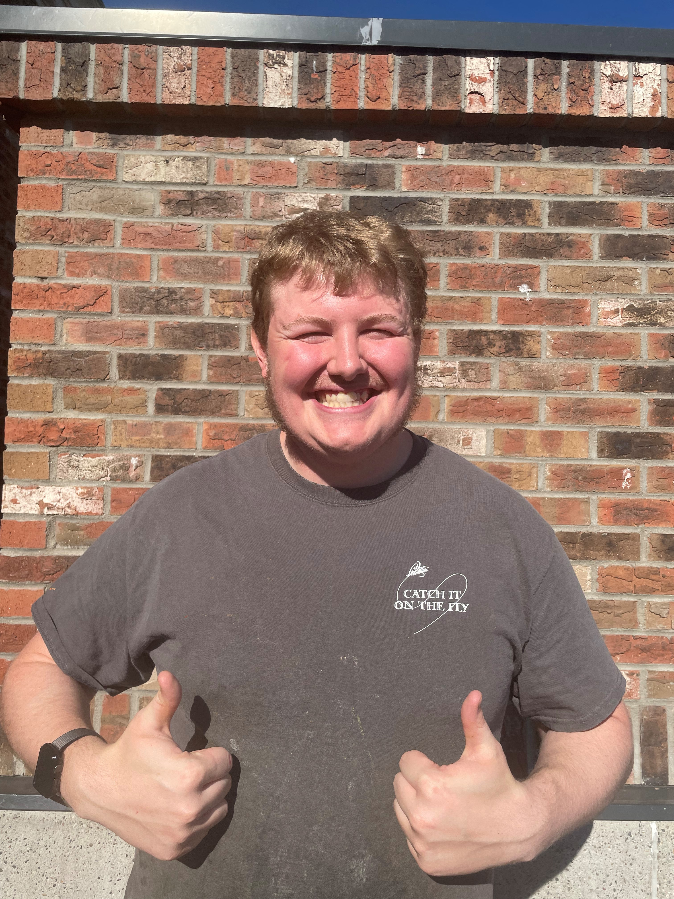

Chef Counselors
Our 'Chef Counselors' are culinary graduates who have volunteered their time to teach our campers trade techqniues found in any kitchen.

John Macabre
resident cheese expert
head of sauces

Matt Blatt
meat master
head of seasoning

Loui Ventti
commander of veggtables and fruits
head of side dishes